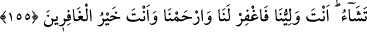

Hâfız der ki:
Vefa gösterelim, kınanalım, hoş olalım
Çünkü bizim yolumuzda incinmek küfrân-ı nîmettir
Bir hadiste şöyle buyurulmuştur: “Kork, Allah’tan korkmayandan.”[94] İmam Sehavî,
bu hadisin sened bakımından olmasa bile mânâ bakımından doğru olduğunu söylemiştir.
Çünkü Allah’tan korkmamak, insanı her türlü kötülüğe ve nâhoşluğa sevkeder.
Mesnevî’de şöyle geçer:
«Korkmayın» sözü, korkanlara sunulan hazır yemektir
Korkanlara lâyık olan yemektir
Kim korkarsa, onu emin ederler
Korkan kişinin gönlünü sakinleştirirler
Korkusu olmayana nasıl «korkma» dersin?
Derse muhtaç olmayana niye ders verirsin?
155. Musa tayin ettiğimiz vakitte kavminden yetmiş adam seçti. Onları o müthiş
deprem yakalayınca Musa dedi ki: “Ey Rabbim! Dileseydin onları da beni de daha
önce helâk ederdin. İçimizden birtakım beyinsizlerin işlediği (günah) yüzünden
hepimizi helâk edecek misin? Bu iş, senin imtihanından başka bir şey değildir.
Onunla dilediğini saptırırsın, dilediğini de doğru yola iletirsin. Sen bizim
sahibimizsin, bizi bağışla ve bize acı! Sen bağışlayanların en iyisisin.
“Mûsâ, tâyin ettiğimiz buluşma vakti için kavminden yetmiş adam seçti.” Allah
Teâlâ, Mûsâ (a.s.)’a kavminin buzağıya tapmasından özür dilemek üzere
İsrâiloğulları’nın en hayırlılarından yetmiş kişi seçerek belirlenen vakitte huzuruna
getirmesini emretmişti. Belirlenen bu buluşma vakti, münacât ve konuşma için değil,
tevbe içindi. Mûsâ (a.s.), Rabb’i ile buluşmaya çıktığı her iki defada kavminden yetmiş
kişi seçti ve onları da beraberinde götürdü.
İsrâiloğulları, on iki boydu. Mûsâ (a.s.), her boydan altışar kişi seçti. Bunların
toplamı yetmiş iki kişi oldu. Mûsâ (a.s.): “İçinizden iki kişi geri kalsın, gelmesin.
Çünkü ben sadece yetmiş kişi götürmekle emrolundum.” dedi. Fakat kimse geri kalmak